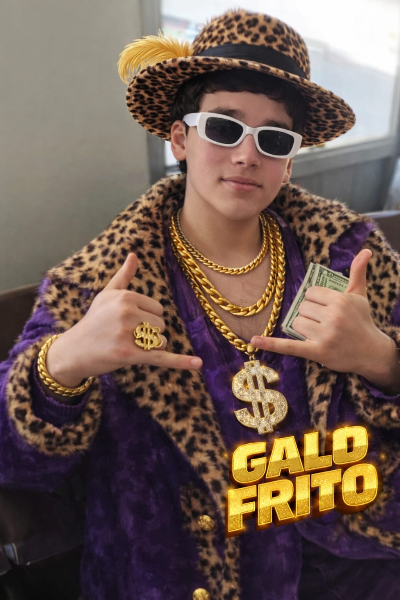
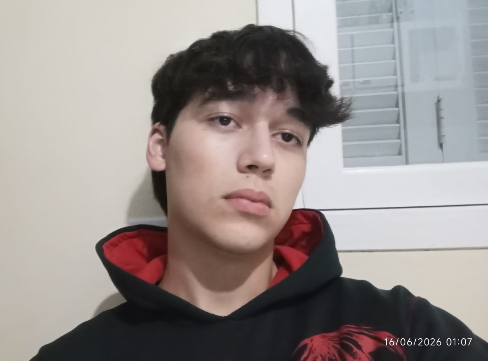

Sobre Mim

Olá! Meu nome é Lucas Eduardo de Godoy. Nasci em Marau, RS, no dia 28 de setembro de 2007, mas antes mesmo de completar meu primeiro ano de vida, eu e meus pais, Antonio Marcos de Godoy e Silvane Fatima Smolarek, nos mudamos para Santo Antônio do Palma, RS, para ficarmos mais perto dos meus avós maternos.
Atualmente, sou estudante de Análise e Desenvolvimento de Sistemas (ADS) na Universidade de Passo Fundo (UPF), curso que iniciei este ano e estou adorando. Concluí meu Ensino Médio na Escola Padre Aneto Bogni, uma instituição muito boa pela qual tenho muito carinho. Nas horas vagas, sou um grande entusiasta da cultura geek, com muito interesse em animes, mangás, light novels e afins.
Minha trajetória profissional começou em 2023, trabalhando aos sábados como garçom no restaurante Girasol. Depois disso, adquiri bastante experiência na área de granjas: trabalhei em uma granja de ovos durante um lote inteiro e fui auxiliar de gerente em uma granja de suínos por alguns meses. Em setembro de 2024, comecei a trabalhar na Destak Maravalhas operando máquinas, onde fiquei até o fim de 2025. Mais recentemente, desde o dia 5 de janeiro de 2026, trabalho com o Vinicius Tagliari, atuando basicamente como o responsável pelo RH de suas duas granjas de suínos e como assistente na granja de aves.
Minha atual Musica favorita é....
Adoro essa música do Stark
